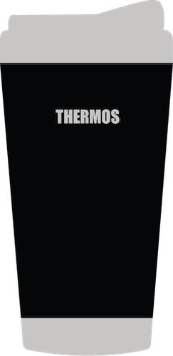
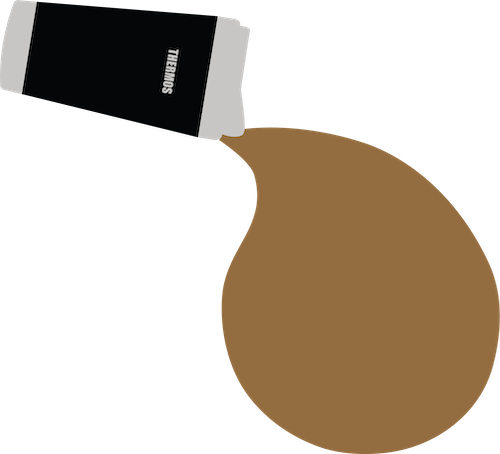
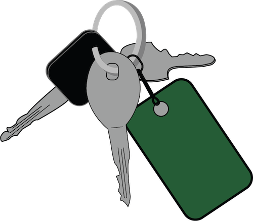
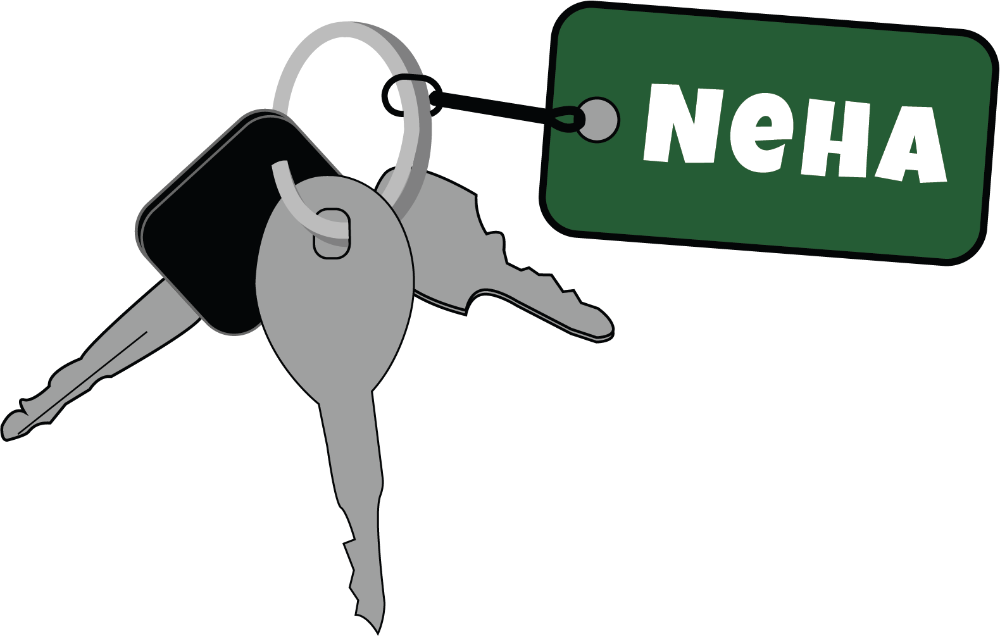
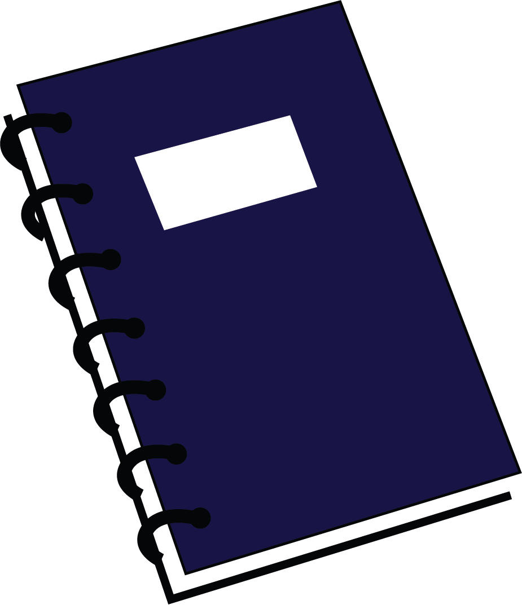

-


This is my every day thermos. I can't leave without my thermos full of coffee every morning. It helps me get started and keeps me productive throughout the day.
-


These are my keys with one keychain. I like to alsways have at least one keychain on my keys, to make them look better but also for me to distinguish each set of keys I have.
-


I always tend to carry a notebook with me, even though I usually use sketching pads more than notebooks. Since I like to have handwritten notes for my classes, my notebook is a quick and easy tool to help me study and learn.